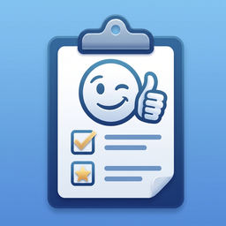

Interview Prep: Practice
Interview Prep: Practice is a simple and easy-to-use app for practicing common job interview questions, writing answer notes, and preparing with confidence.
Browse common interview questions by category, save important questions as favorites, and write your own answer notes using the STAR method.
You can practice random questions, use a timer to keep your answers clear and focused, and check preparation tasks before your interview day.
This app is useful for job seekers, students, career changers, new graduates, and anyone who wants to prepare for job interviews in a simple and organized way.
Features
- Practice common job interview questions
- Browse questions by category
- Search interview questions quickly
- Practice with a random question
- Save important questions as favorites
- Write personal answer notes
- Use the STAR method to structure answers
- Practice with a built-in timer
- Prepare with an interview checklist
- Track completed checklist items
- Review saved questions anytime
- Simple and clean design
- Optional ad removal
Frequently Asked Questions
-
Q: What does this app do?
A: Interview Prep: Practice helps you prepare for job interviews by practicing common interview questions, saving favorite questions, writing answer notes, and using a preparation checklist.
-
Q: Who is this app for?
A: This app is designed for job seekers, students, new graduates, career changers, and anyone preparing for a job interview.
-
Q: What kind of questions are included?
A: The app includes common interview questions in categories such as general questions, behavioral questions, strengths, teamwork, leadership, and career-related questions.
-
Q: Can I search for interview questions?
A: Yes. You can search the question list to quickly find questions by keyword or category.
-
Q: Can I save important questions?
A: Yes. You can save questions as favorites and review them later from the saved questions section.
-
Q: Can I write my own answers?
A: Yes. You can write personal answer notes for each interview question.
-
Q: What is the STAR method?
A: The STAR method is a simple way to organize interview answers using Situation, Task, Action, and Result. The app provides this structure to help you prepare clearer answers.
-
Q: Does the app include a practice timer?
A: Yes. The app includes a timer so you can practice answering questions within a set time and avoid overly long responses.
-
Q: What is the interview checklist for?
A: The checklist helps you prepare before your interview, such as researching the company, reviewing the job description, preparing questions to ask, and checking your meeting link or equipment.
-
Q: Can I use the app for school or internship interviews?
A: Yes. The app can be used for job interviews, internships, student interviews, and other common interview preparation needs.
-
Q: Is this app an AI interview coach?
A: No. This app does not generate AI feedback or evaluate your answers. It is a simple preparation tool for practicing questions, writing notes, and organizing your interview preparation.
-
Q: Where is my data stored?
A: Your favorite questions, answer notes, and checklist status are stored locally on your device. The app does not require an account to use the main features.
-
Q: Can I remove ads?
A: Yes. You can remove banner ads with an optional in-app purchase.
-
Q: Do I need an internet connection?
A: Interview question practice and notes can be used offline. An internet connection may be required to load ads or complete in-app purchases.
📩 Contact
If you have any questions or encounter issues, feel free to contact us:
← Back to Support Center